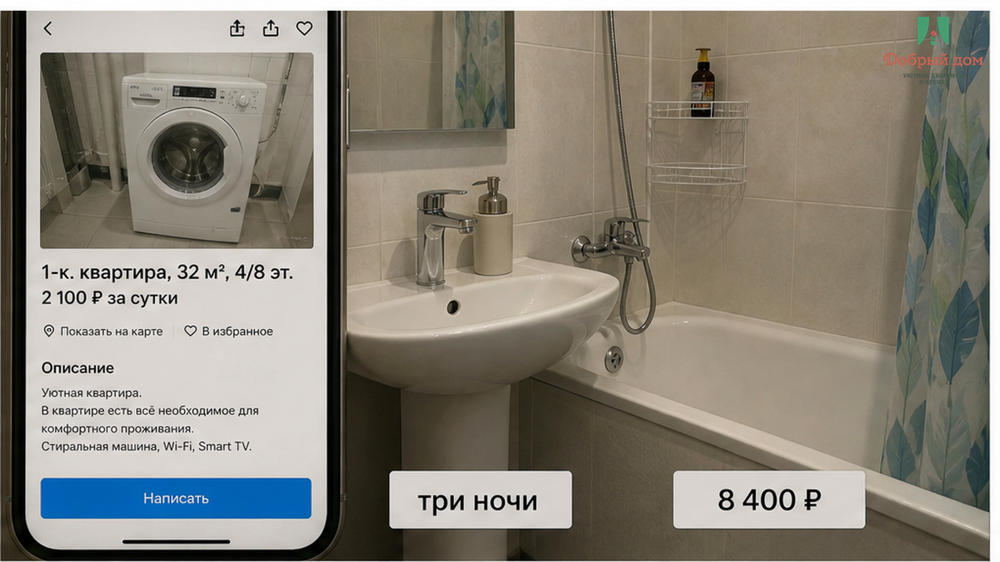
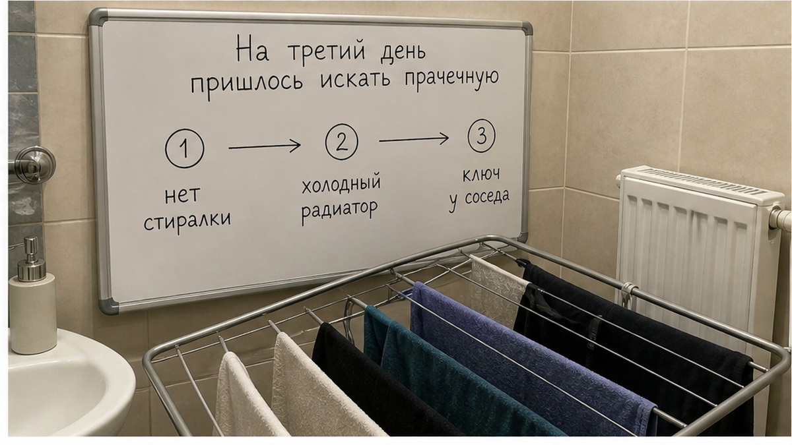
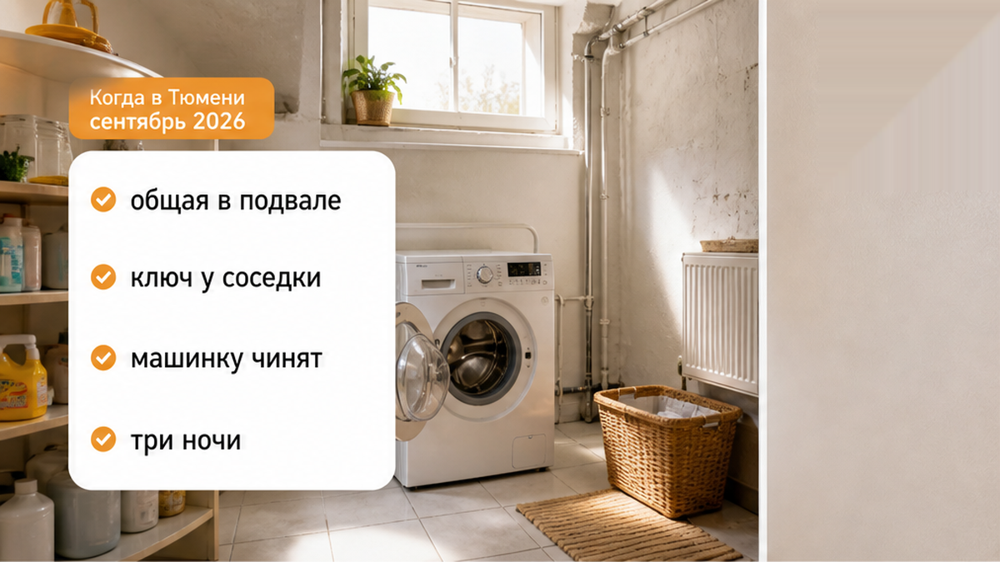
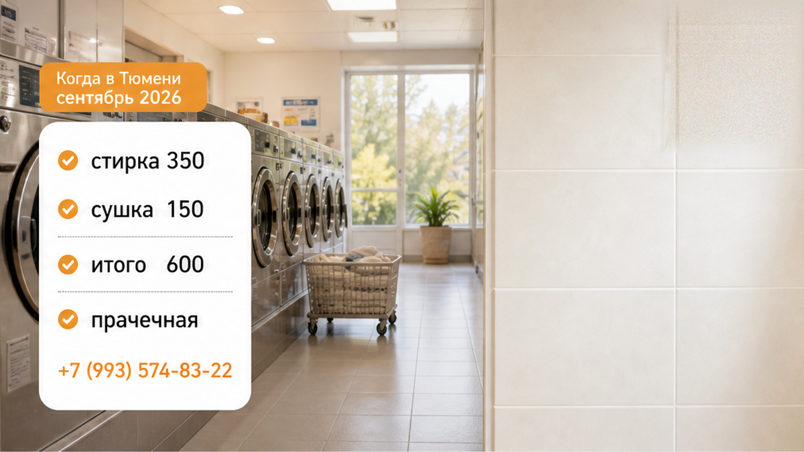
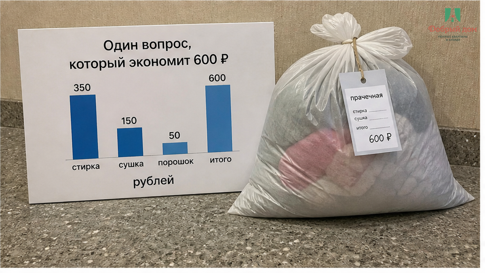
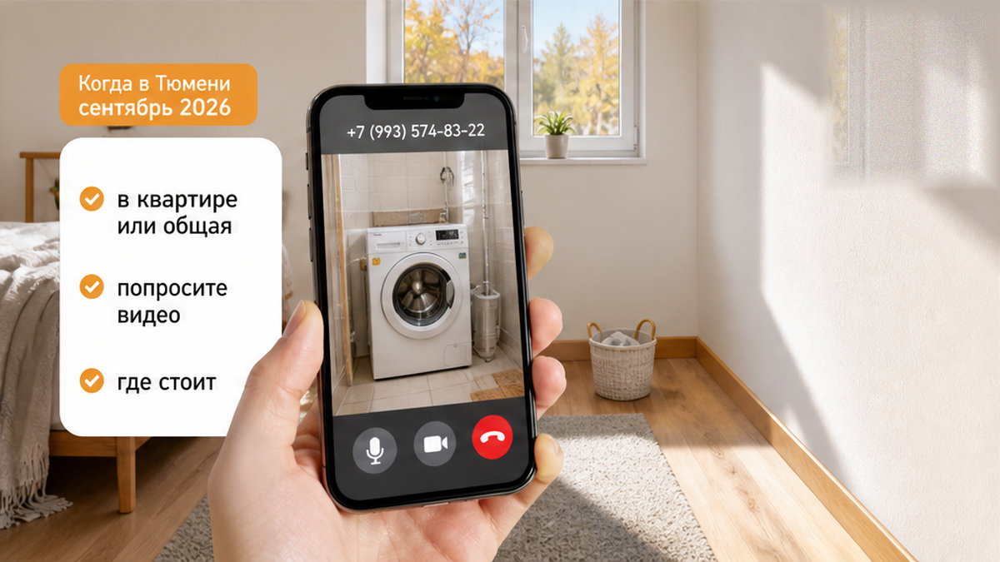

«Три ночи платил. На фото стиралка в ванной». — «Машинка общая, в подвале. Вы описание читали? В квартире раковина — и всё». Этот разговор стоил гостю 600 ₽ сверху и половину третьего дня короткой поездки. Он снял квартиру посуточно в Тюмени за 8 400 ₽ на три ночи, пролистал карточку, увидел белую машинку под столешницей, шланг, кафель — и мысленно закрыл вопрос со стиркой ещё до оплаты.
В квартире оказались раковина, вешалка и складная сушилка у батареи. Машинки не было ни в ванной, ни на кухне, ни в коридоре. Сломалось не оборудование. Сломалась связка «фото — эта квартира». Гость был уверен, что снял жильё со стиралкой. Хост был уверен, что показал общую машинку дома и ничего не спрятал.
Я хост посуточной в Тюмени. Это «Добрый дом». Пишут в Telegram и MAX — и про такие истории пишут чаще, чем про сломанную технику.
Не обман в чистом виде. А раковина, вешалка и 600 ₽ в прачечной на третий день короткой поездки.

Когда человек ищет квартиру посуточно, он смотрит фотографии быстрее, чем читает описание. Это не невнимательность и не глупость. Перед ним двадцать карточек: кровать, кухня, ванная, техника. В блоке ванной стоит стиральная машина — мозг ставит галочку: стирка есть. Не «возможно, где-то в доме». Не «надо просить ключ у соседки». А именно здесь, в этой ванной.
Дальше встречаются две правды. Общая машинка действительно может быть в подвале или подсобке. В описании может стоять строка «стиралка общая». Но гость уже увидел фото и понял его по-своему. Потом в чате сталкиваются: «На фото же машинка» и «Вы описание читали?» Формально спорить можно долго. По-человечески оба уже проиграли.
Так же работает история с кухней: на снимке плита и чайник, а человек три ночи ужинает в кафе. Я писал об этом в материале «Квартира посуточно: кухня есть — три ночи в кафе каждый день». И так же бывает с ванной, когда в карточке обещано «всё для гостей», а по факту остаётся один мокрый коврик — вот такой случай. Предмет меняется. Схема нет: картинка обещает больше, чем даёт доступ по ключу.



Гость написал вечером первого дня: «Подскажите, где стиральная машина? Не могу найти». Ему ответили через полчаса: машинка общая, в подвале, идти нужно у второго подъезда, ключ у соседки из 14-й квартиры. Он уточнил, работает ли она и как договориться по времени. До утра — тишина.
Потом было «сейчас узнаю». Потом выяснилось, что машинку чинят после прошлых жильцов. Футболку гость постирал в раковине, повесил на сушилку. К утру она не высохла: сентябрь, окна закрыты, батареи холодные. На третий день вещи пришлось собрать в пакет и отнести в прачечную самообслуживания.
Стирка — 350 ₽, сушка — 150 ₽, порошок — 50 ₽. Итого около 600 ₽. По Тюмени полный цикл в такой прачечной обычно и выходит в районе 550–600 ₽: где-то чуть дешевле, где-то дороже. Но для человека это не просто чек. Это незапланированные расходы, дорога туда-обратно и время, которое он приехал потратить не на поиск работающей машинки.
Потом всё пошло по знакомой дороге. Гость попросил частичный возврат: машинка была на фото. Хост отказал: машинка есть, но общая, в квартире её никто не обещал. Гость потратил 600 ₽ и полдня. Хост получил отзыв, после которого следующие гости начнут читать карточку с лупой — или выберут соседа.
Сама по себе общая стиралка — не проблема. Подвал — тоже не проблема. Проблема начинается там, где фотография говорит «вот она», а доступ к ней оказывается отдельным квестом.
А вы бы считали такую историю невнимательностью гостя или обязанностью хоста объяснить всё до оплаты? Напишите в Telegram или MAX. Такие споры лучше разбирать до перевода, а не после прачечной.


Стиральная машина в этой квартире или общая? Где именно она стоит и как в неё попасть?
Вопрос кажется занудным. И хорошо. Ответ «в квартире, в ванной, работает» — одна строка в переписке. Ответ «общая, в подвале, ключ у соседей» — тоже нормальный: вы хотя бы заранее понимаете условия. Плохой ответ — «там всё есть», «смотрите фото», «на месте разберётесь» или молчание.
Если ответ размытый, попросите короткое видео ванной с машинкой. Не для конфликта, а чтобы увидеть, что техника стоит именно в той квартире, которую вы бронируете. У хоста, у которого всё на месте, это занимает минуту. А если вместо видео начинаются объяснения про подвал, соседей и «сейчас не могу снять» — ясность уже появилась.
Для хоста правило простое: если техники в квартире нет, её не должно быть на фото так, будто она там есть. Если машинка общая, это пишется в первых строках, а не между Wi‑Fi и полотенцами. Если она сломана, гость узнаёт об этом до перевода, а не с пакетом вещей в руках.
Для гостя правило такое же короткое: Сначала проверка. Потом перевод. Не наоборот. Это работает не только со стиралкой. Так бывает с горячей водой: в карточке она есть, а на месте — ледяной душ и мигающий бойлер. Про это — отдельная история. Так бывает и с фразой «всё включено», после которой в такси доплачивают 2 400 ₽ — тот же механизм.
Перед бронью проверьте несколько вещей:
Фотография — это витрина. Она может показать предмет, но не гарантирует ваш доступ к нему. А поездка становится спокойнее не от красивой карточки, а от одного прямого вопроса до брони.
Если ищете квартиру посуточно в Тюмени и хотите заранее понимать, что именно будет в ванной: Telegram-канал «Добрый дом» · MAX · бронирование · сайт · +7 (993) 574-83-22 · менеджер в Telegram.